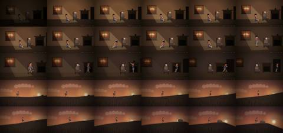
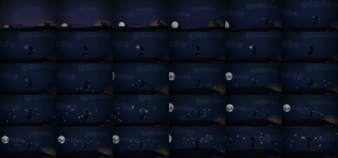
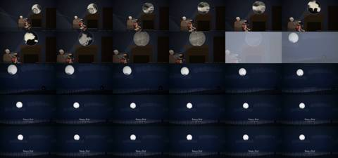
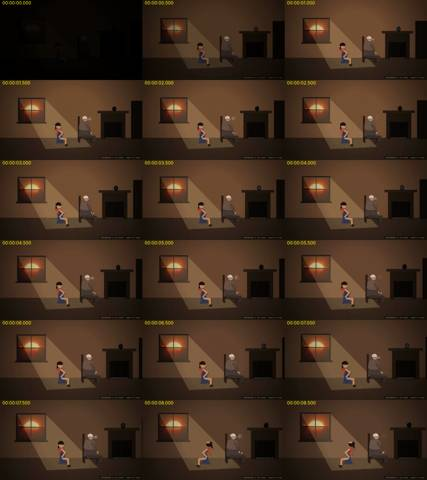
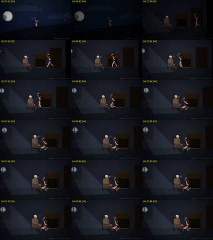
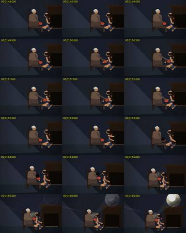
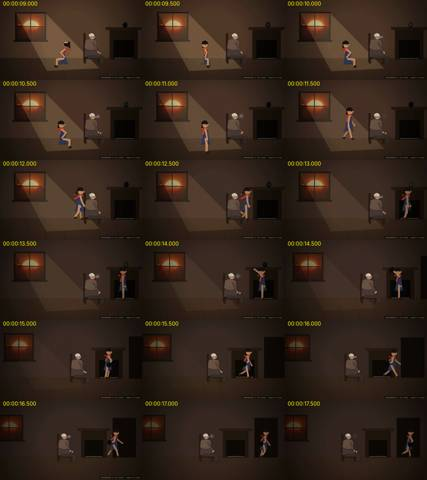
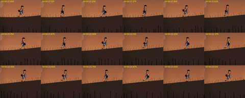

Critic · 2026-10-28 20:49 UTC · looked at 18 images
Critic for Small Sun film
REPAIR 1FAIL 1
The prompt it was given
You are an independent film critic. You did not make this short animated film. Watch it before you read anything about it, and keep an inconvenient verdict.
The file is /home/claude/afterlight/film2/small-sun.mp4 (2 min 42 s, 1280x720, with sound). ffmpeg and python are installed. To watch it:
- Extract frames at 2 fps and view them in order. Look closely at motion by extracting short 8 fps bursts around key moments.
- Measure the sound over time with ffmpeg ebur128 or astats. You cannot hear it, so judge the sound from its loudness curve and its event structure. You may also make spectrogram images with ffmpeg showspectrumpic and view them.
- Do not open any other files in /home/claude/afterlight/film2.
The filmmaker's complaint about the previous film was: "There's no real animation or dynamism; it feels like a stilted PowerPoint. Think more about better storytelling. Breathe life and warmth into it through sound and motion." This film is the answer to that complaint. It is a wordless cut-paper fable.
Judge:
- Is it a story? Can you say what the girl wants, what she tries, what fails, what she discovers, and why the ending matters, without any explanation?
- Is there real animation? Look at body acting, walk and run cycles, secondary motion (braid, scarf), camera moves, and depth. Or does anything still feel like a slide?
- Do the archive images belong inside the world? They appear as the sunset in the window, the moon, and pictures in a disc of light on the wall.
- Does the sound structure seem to support the action: footsteps, breath, swells, and a silence at a key moment?
- Name specific weak or confusing moments, with timestamps.
Return plain prose, 2–5 sentences per field: VERDICT: PASS | FAIL | INCONCLUSIVE STORY: MOTION: ARCHIVE: SOUND: WEAKEST MOMENTS: REPAIR (the three changes that would most improve it):
















What it reported
VERDICT: FAIL. It is clearly better than a slide deck, but the second half of the story does not read without explanation. Several stretches still play as held tableaux.
STORY: The first act reads clearly without words. The grandmother is cold: her breath shows and the hearth is empty. The girl takes the dark jar from the mantel (0:13–0:15), climbs the hill at sunset and catches the sun in it. The jar glows and throws a beam back toward the house (0:34–0:45). The failure is also clear: the sun sets and the jar fades (0:50–1:11). After that the causal chain breaks. The fireflies (1:13–1:30) swarm around her but never visibly enter the jar, so they read as consolation rather than as a solution. A red disc appears on the grandmother's lap (1:44–1:46) and is never legible as the girl's scarf. The girl hands over the jar, the grandmother holds it in the moonbeam, and it projects pictures (1:53–2:10). I can't tell whether the jar kept some sunlight, whether the moon refilled it, or whether the grandmother knew something the girl didn't, so the "discovery" plays as a magic trick rather than a realization. The ending (white-out at 2:10, then the house on the hill with a small lit window under the moon) is a good final image. It lands softly because the film never closes the cold/warmth question it opened: the hearth is never lit, and the breath simply stops appearing.
MOTION: This is real animation. The walk on the hill has an alternating gait with the jar swinging (8 fps check at 0:21–0:23). The girl has distinct poses for sitting, getting up, reaching up to the mantel (0:14) and climbing the rock (0:30–0:33). The camera pans and tracks the climb, clouds drift with some parallax, and the interior push-ins from 1:41 to 2:06 are motivated. The puppet still moves at stiff paper-doll joints, and the braid and scarf trail but don't really overlap or settle. The grandmother is almost inert for the whole film: breath puffs plus one arm reach (1:50–1:54). The opening 0:00–0:08 is a held pose with small bobs, so the film starts like a slide. The night section from 1:04 to 1:27 is so underexposed that the girl is a black shape on navy and all her body acting is lost. The title hold on a static moon (2:15–2:31, about 16 s) is also a slide.
ARCHIVE: The sunset in the window works best: in the warm interior it reads as the window's view, and its light cone onto the floor ties it into the room. The moon ("Moon and Cloud 4") is cut into a disc with a scalloped bite. It reads more like an eclipse cut-out than a moon behind cloud, and it pops in and out at the frame edge (1:15–1:27). The projected disc has an in-world source (beam from the jar through the moonlight), so the device belongs. The contents do not: a stranger's face, a hand from a skin-care film, blotchy amateur footage, a staged starfield. None of them connect to this grandmother or this girl, so the climax is a montage of unrelated pictures rather than her memories. The burned-in source captions in the lower right ("PHOTOGRAPHED in the window · Legacy for Wings", and so on) run through the whole film and keep pulling the archive back out of the world.
SOUND: The loudness structure follows the action. A dense periodic transient band during the climb (18–33 s) matches footsteps and peaks around -8.5 LUFS at 24 s. There is a clear hush at 34 s (-34 LUFS) just before the jar ignites, then a swell from 35 to 45 s. A long decay to about -37 at 53 s matches the sunset, and a dip at 70–71 s (-36) sits on the jar going dark, which is the key silence and it is placed right. A second trough at 88–91 s sits on her standing to go home, followed by a loud run (95–103 s). Near-silence on entering the house (104–108 s) gives way to fuller tonal music under the projection. The mix gets louder again during the credits (about -15 at 154–155 s), after the title had already settled. That undercuts the ending.
WEAKEST MOMENTS:
- 0:00–0:08: static held tableau before anything happens.
- 0:35–0:45: the beam from the jar back toward the tiny house is too small to read as intent.
- 1:04–1:27: so dark the girl's acting is invisible, and the fireflies do nothing to the plot.
- 1:44–1:54: the red disc and jar hand-off is illegible as staging. It is the most important beat and the hardest to read.
- 1:58–2:10: the archive montage is unconnected to the characters.
- 2:15–2:31: long static title hold.
- 2:32–2:42: credits are a dense process note, and the audio swells under them.
- Throughout: burned-in source captions.
REPAIR (the three changes that would most improve it):
- Make the turn causal and visible. Either the fireflies visibly go into the jar, or the grandmother shows that the jar plus moonlight was always the answer. Stage the hand-off as a readable close-up and light the hearth or warm the room afterwards, so the cold set up in the opening is resolved.
- Bring the night section up to readable exposure and give the grandmother body acting (turning toward the girl, recognition, a hand on her head). The emotional payoff currently rests on a near-motionless figure.
- Make the projected pictures belong to her: one coherent sequence that could be her own past. Remove the on-screen source captions (keep sources in the credits), cut the title hold by half, and keep the credits quieter than the ending.